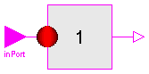
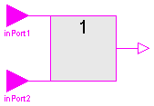
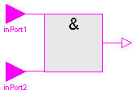
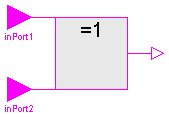
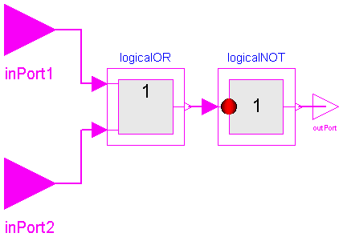
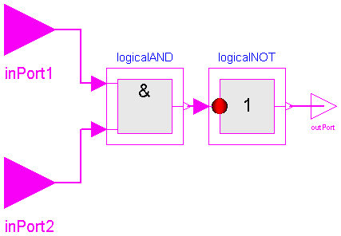
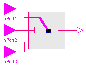
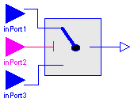

This package contains components to operate on Boolean signals.
This package is not part of the Modelica standard library, because it is planned to vectorize all components and to support alternatively the American symbols for the logical operators.
Release Notes:
Copyright (C) 2000, DLR.
The ModelicaAdditions.Blocks.Logical package is free software; it can be redistributed and/or modified under the terms of the Modelica license, see the license conditions and the accompanying disclaimer in the documentation of package Modelica in file "Modelica/package.mo".

Logical NOT Block The output y is true, if the input u is false. The output y is false, if the input u is true. +---------------------------+ | input output | | -> | | u y | +---------------------------+ | true false | | false true | +----------------------------
block NOT "Logical NOT Block" extends Modelica.Blocks.Interfaces.BooleanSISO; equation y = not u; end NOT;

Logical OR Block The output y is false, if the first input u1 and the second input u2 are both false. In all other cases the output y is true. +---------------------------------+ | input output | | -> | | u1 u2 y | +---------------------------------+ | true true true | | true false true | | false true true | | false false false | +---------------------------------+
block OR "Logical OR Block" extends Interfaces.BooleanSI2SO; equation y = u1 or u2; end OR;

Logical AND Block The output y is true, if the first input u1 and the second input u2 are both true. In all other cases the output y is false. +---------------------------------+ | input output | | -> | | u1 u2 y | +---------------------------------+ | true true true | | true false false | | false true false | | false false false | +---------------------------------+
block AND "Logical AND Block" extends Interfaces.BooleanSI2SO; equation y = u1 and u2; end AND;

Logical Exclusive OR Block The output y is false, if the first input u1 and the second input u2 are both false or both true. In all other cases the output y is true. +---------------------------------+ | input output | | -> | | u1 u2 y | +---------------------------------+ | true true false | | true false true | | false true true | | false false false | +---------------------------------+
block XOR "Logical Exclusive OR Block" extends Interfaces.BooleanSI2SO; equation y = if (u1 and u2) or (not u1 and not u2) then false else true; end XOR;

Logical NOR Block The output y is true, if the first input u1 and the second input u2 are both false. In all other cases the output y is true. +---------------------------------+ | input output | | -> | | u1 u2 y | +---------------------------------+ | true true false | | true false false | | false true false | | false false true | +---------------------------------+
block NOR "Logical NOR Block" extends Interfaces.BooleanSI2SO; NOT logicalNOT; OR logicalOR; equation connect(logicalOR.outPort, logicalNOT.inPort); connect(logicalNOT.outPort, outPort); connect(inPort1, logicalOR.inPort1); connect(inPort2, logicalOR.inPort2); end NOR;

Logical NAND Block The output y is false, if the first input u1 and the second input u2 are both true. In all other cases the output y is true. +---------------------------------+ | input output | | -> | | u1 u2 y | +---------------------------------+ | true true false | | true false true | | false true true | | false false true | +---------------------------------+
block NAND "Logical NAND Block" extends Interfaces.BooleanSI2SO; NOT logicalNOT; AND logicalAND; equation connect(logicalNOT.outPort, outPort); connect(inPort1, logicalAND.inPort1); connect(inPort2, logicalAND.inPort2); connect(logicalAND.outPort, logicalNOT.inPort); end NAND;

The LogicalSwitch switches, depending on the Boolean inPort2 connector (the middle connector), between the two possible input signals inPort1 (upper connector) and inPort3 (lower connector). If inPort2 is true, outPort is set equal to inPort1, else it is set equal to inPort2.
block LogicalSwitch "Logical Switch"
extends Modelica.Blocks.Interfaces.BooleanBlockIcon;
Modelica.Blocks.Interfaces.BooleanInPort inPort1(final n=1, signal(final
start={true})) "Connector of Boolean input signal 1";
Modelica.Blocks.Interfaces.BooleanInPort inPort2(final n=1, signal(final
start={true})) "Connector of Boolean input signal 2";
Modelica.Blocks.Interfaces.BooleanInPort inPort3(final n=1, signal(final
start={true})) "Connector of Boolean input signal 3";
Modelica.Blocks.Interfaces.BooleanOutPort outPort(final n=1, signal(
final start={true})) "Connector of Boolean output signal";
protected
Boolean u1(start=true) = inPort1.signal[1] "Input signal 1";
Boolean u2(start=true) = inPort2.signal[1] "Input signal 2";
Boolean u3(start=true) = inPort3.signal[1] "Input signal 3";
Boolean y(start=true) = outPort.signal[1] "Output signal";
equation
y = if u2 then u1 else u3;
end LogicalSwitch;

The Logical.Switch switches, depending on the logical connector inPort2 (the middle connector) between the two possible input signals inPort1 (upper connector) and inPort3 (lower connector). If inPort2 is true, the outPort is set equal to inPort1, else it is set equal to inPort3.
| Name | Default | Description |
|---|---|---|
| n | 1 | size of input and output Real signal vectors |
block Switch "Switch between two Real signal vectors"
extends Modelica.Blocks.Interfaces.BlockIcon;
parameter Integer n=1
"size of input and output Real signal vectors";
Modelica.Blocks.Interfaces.InPort inPort1(final n=n)
"Connector of Real input signal 1";
Modelica.Blocks.Interfaces.BooleanInPort inPort2(final n=1, signal(final
start={true})) "Connector of Boolean input signal 2";
Modelica.Blocks.Interfaces.InPort inPort3(final n=n)
"Connector of Real input signal 3";
Modelica.Blocks.Interfaces.OutPort outPort(final n=n)
"Connector of Real output signal";
protected
Real u1[n]=inPort1.signal "Input signal 1";
Boolean u2(start=true) = inPort2.signal[1] "Input signal 2";
Real u3[n]=inPort3.signal "Input signal 3";
Real y[n]=outPort.signal "Output signal";
equation
y = if u2 then u1 else u3;
end Switch;

The Boolean2Real block transforms Boolean to Real signals. If the Boolean input is true, the Real output is the value of parameter realTrue, otherwise it is realFalse.
| Name | Default | Description |
|---|---|---|
| n | 1 | size of input and output signal vectors |
| realTrue | 1.0 | Output signal for true Boolean input |
| realFalse | 0.0 | Output signal for false Boolean input |
block Boolean2Real "Convert Boolean to Real signals"
extends Modelica.Blocks.Interfaces.BlockIcon;
parameter Integer n=1 "size of input and output signal vectors";
parameter Real realTrue=1.0 "Output signal for true Boolean input"
;
parameter Real realFalse=0.0
"Output signal for false Boolean input";
Modelica.Blocks.Interfaces.BooleanInPort inPort(final n=n)
"Connector of Boolean input signals";
Modelica.Blocks.Interfaces.OutPort outPort(final n=n)
"Connector of Real output signals";
protected
Boolean u[n](start=fill(true, n)) = inPort.signal "Input signals";
Real y[n]=outPort.signal "Output signals";
equation
for i in 1:n loop
y[i] = if u[i] then realTrue else realFalse;
end for;
end Boolean2Real;
ModelicaAdditions.Blocks.Logical.GreaterThan
| Name | Default | Description |
|---|---|---|
| threshold | 0 | comparision with respect to threshold |
model GreaterThan extends Interfaces.Comparision; equation y = u > threshold; end GreaterThan;
ModelicaAdditions.Blocks.Logical.GreaterEqual
| Name | Default | Description |
|---|---|---|
| threshold | 0 | comparision with respect to threshold |
model GreaterEqual extends Interfaces.Comparision; equation y = u >= threshold; end GreaterEqual;
ModelicaAdditions.Blocks.Logical.LessThan
| Name | Default | Description |
|---|---|---|
| threshold | 0 | comparision with respect to threshold |
model LessThan extends Interfaces.Comparision; equation y = u < threshold; end LessThan;
ModelicaAdditions.Blocks.Logical.LessEqual
| Name | Default | Description |
|---|---|---|
| threshold | 0 | comparision with respect to threshold |
model LessEqual extends Interfaces.Comparision; equation y = u <= threshold; end LessEqual;